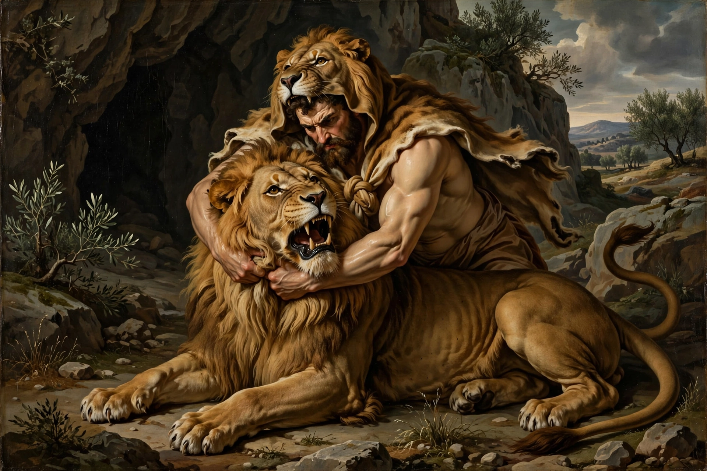

Labours of Hercules

| Labours of Hercules |
|---|
| Figure | Heracles (Hercules) |
|---|
| Imposed by | King Eurystheus of Tiryns/Mycenae |
|---|
| Number | Twelve (originally ten) |
|---|
| Key sources | Apollodorus, Bibliotheca; Diodorus Siculus |
|---|
The Labours of Hercules (Greek: οἱ Ἡρακλέους ἆθλοι) are a series of twelve tasks performed by the Greek hero Heracles (Roman: Hercules) as penance. Driven mad by Hera, Heracles had killed his wife Megara and their children; the oracle at Delphi directed him to serve King Eurystheus of Tiryns for twelve years and perform the labours the king imposed. Originally ten, the number became twelve because Eurystheus refused to count two of them.
The twelve labours
- Nemean lion — slay the invulnerable lion of Nemea; Heracles strangled it and thereafter wore its impenetrable skin.
- Lernaean Hydra — kill the many-headed serpent whose heads regrew; with his nephew Iolaus cauterising the stumps. Disallowed as a counted labour because Iolaus helped.
- Ceryneian Hind — capture alive the golden-horned hind sacred to Artemis (a year-long pursuit).
- Erymanthian Boar — capture the giant boar of Mount Erymanthus alive.
- Augean stables — clean the vast, filthy stables of King Augeas in a single day, by diverting the rivers Alpheus and Peneus. Disallowed because Heracles demanded payment.
- Stymphalian birds — drive off the man-eating, bronze-beaked birds of Lake Stymphalia using a rattle given by Athena.
- Cretan Bull — capture the bull that ravaged Crete.
- Mares of Diomedes — steal the man-eating mares of the Thracian king Diomedes.
- Belt of Hippolyta — obtain the girdle of the Amazon queen Hippolyta.
- Cattle of Geryon — steal the cattle of the three-bodied giant Geryon in the far west (Erytheia).
- Apples of the Hesperides — steal the golden apples, with the help of Atlas, whom Heracles tricked into resuming his burden of the sky.
- Cerberus — capture alive, bare-handed, the three-headed hound guarding the underworld, with Hades' permission.
The labours took Heracles across the Greek world and beyond — to Crete, Thrace, the Black Sea, Libya and the pillars at the strait of Gibraltar ("Pillars of Hercules") — and are among the most frequently depicted cycles in ancient art, notably on the metopes of the Temple of Zeus at Olympia (c. 460 BC). The phrase "Herculean task" derives from them.
See also